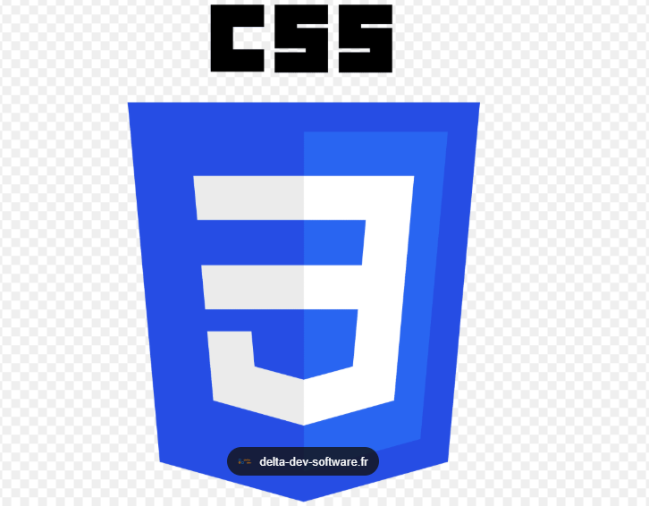

Qué es CSS

Es un lenguaje de hojas de estilo que se utiliza para describir la presentación y el aspecto visual de un documento escrito en un lenguaje de marcado, como HTML. En términos sencillos, si HTML proporciona
la estructura y el contenido de una página web, CSS proporciona el diseño, los colores, las tipografías y el posicionamiento.Es un lenguaje de hojas de estilo que se utiliza para describir la presentación y el aspecto
visual de un documento escrito en un lenguaje de marcado, como HTML. En términos sencillos, si HTML proporciona la estructura y el contenido de una página web, CSS proporciona el diseño, los colores, las tipografías y el posicionamiento.
Cómo Utilizar CSS con HTML
 Hay tres métodos principales para aplicar o vincular CSS a un documento HTML. La elección del método depende de la necesidad de control, reutilización y complejidad del proyecto.Hay tres métodos
Hay tres métodos principales para aplicar o vincular CSS a un documento HTML. La elección del método depende de la necesidad de control, reutilización y complejidad del proyecto.Hay tres métodos
principales para aplicar o vincular CSS a un documento HTML. La elección del método depende de la necesidad de control, reutilización y complejidad del proyecto.
CSS en línea
 El CSS en línea (Inline CSS) es un método para aplicar estilos directamente a un elemento HTML individual utilizando el atributo global style.
Es el método con la mayor especificidad (prioridad),
El CSS en línea (Inline CSS) es un método para aplicar estilos directamente a un elemento HTML individual utilizando el atributo global style.
Es el método con la mayor especificidad (prioridad),
lo que significa que los estilos definidos de esta manera anularán los estilos internos y externos para ese elemento específico.El CSS en línea (Inline CSS) es un método para aplicar estilos directamente
a un elemento HTML individual utilizando el atributo global style.
Es el método con la mayor especificidad (prioridad), lo que significa que los estilos definidos de esta manera anularán los estilos internos y externos para ese elemento específico.
CSS interno.
CSS Interno (Internal CSS) es un método para aplicar estilos a una página web incrustando las reglas de estilo directamente dentro del documento HTML al que se aplican.CSS Interno (Internal CSS) es un método para aplicar
estilos a una página web incrustando las reglas de estilo directamente dentro del documento HTML al que se aplican.El CSS interno se utiliza generalmente para propósitos de prueba o para estilos muy específicos de una sola página.
Para proyectos más grandes y por buenas prácticas, se prefieren:
CSS Externo
El CSS Externo (External CSS) es el método más recomendado y utilizado para aplicar estilos a un sitio web. Consiste en almacenar todas las reglas de estilo en un archivo separado con la extensión .css, que luego se enlaza
a los documentos HTML.El CSS Externo (External CSS) es el método más recomendado y utilizado para aplicar estilos a un sitio web. Consiste en almacenar todas las reglas de estilo en un archivo separado con la extensión .css,
que luego se enlaza a los documentos HTML.
Este enfoque promueve la separación
de preocupaciones, manteniendo la estructura del contenido (HTML) separada de su presentación visual
Este enfoque promueve la separación de preocupaciones, manteniendo la estructura del contenido (HTML) separada de su presentación visual (CSS).